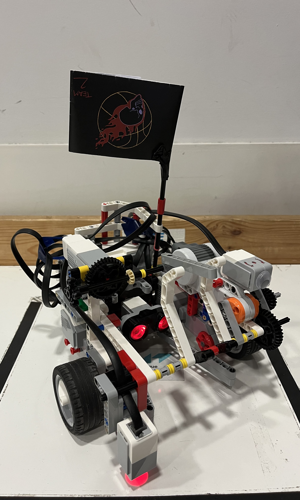
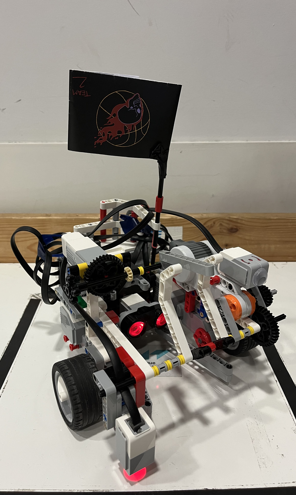

Robot design
I. Our vision
Our robot is called Kobe. We created Kobe with two goals in mind: Simplicity and efficiency. Our robot will therefore only rely two motors to navigate. He uses a gyroscope, a color sensor and a touch sensor to know where he is in the arena. Finally to grab and throw the balls we fitted him with a pair of rotating arms.
II. Actuators
Kobe's main limbs are four motors. Driving is ensured by two of the large motors. The last large motor is used for grabbing balls. The last motor, the medium motor, is used to trow the ball. This motor is used here as we found it faster than the others, and for throwing a ball up to 50cm we needed speed for the throwing arm.
III. Sensors
We spent a lot of time trying endow Kobe with the gift of sight (through a sonar). We tried implementing a way to detect the ball through scanning the area where we thought the ball was, and then form the measurements be able to pinpoint at which angle the ball was. Unfortunatel due to interferences with the opponent's sonars, we did not manage to do this. We also had some strange problems with the sonar in the day leading up to the competition, where the sonar only read values less then 18 cm and bigger then 75cm. As the sonar was so unreliable for us we decided to try to not rely on it and rather rely on the sensors that we found were reliable, the gyroscope, color and the touch. The gyroscope we used to find our angle, the color we used to navigate according to the lines on the area and the touch we used to correct certain faults in the rotation with the gyro, as the gyro has an accuracy of +/-3 degrees for 90 degrees turns. The way we corrected was to crash into the wall with our back to ensure that we were 90 degrees on the wall.
This is kobe:
 

Here is his underbelly:
A view from above:
His back: